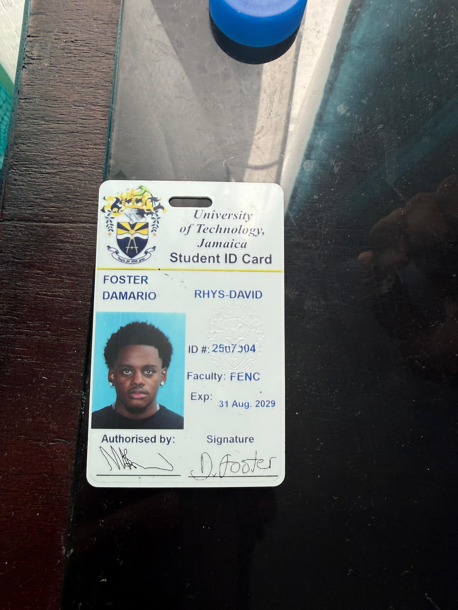

Welcome to My Portfolio
Hello! My name is Damario Foster. I am currently studying Computer Science at the University of Technology, Jamaica. This site is my personal portfolio.
I have a passion for technology, coding and learning. I love problem solving and learning about computers and software development.
This portfolio is designed to display my character, personal growth, academics, work and career aspirations. Please take the time to explore each section of the site to get a better understanding of who I am.
Explore My Portfolio
Professional Development
Learn about my education, work experience, technical skills, career goals, and academic projects.
View Professional PageMy Personality
Discover my strongest personality traits, hobbies, personal inspiration, and thoughts on using artificial intelligence as a student.
View Personality PagePersonal Development
Read my reflections on personal growth, financial responsibility, and lessons from The Richest Man in Babylon.
View Personal Development PageMy Student Identification
Below is my University of Technology, Jamaica student identification card. Click the image to contact my tutor through email.

Student Name: Damario Foster
Student ID: 2507304
Programme: BSc in Computing
Institution: University of Technology, Jamaica
Useful Links
Visit the University of Technology, Jamaica website to learn more about my university and its programmes.
UTech Jamaica Official Website